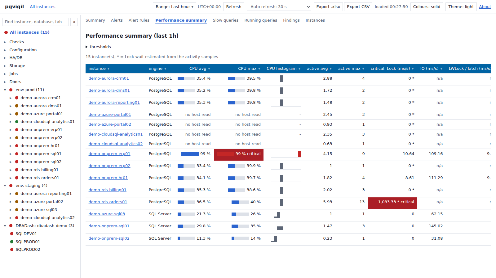
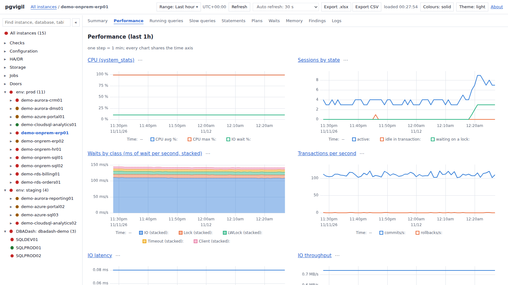
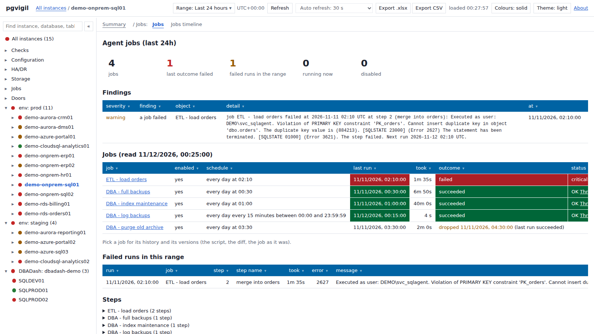
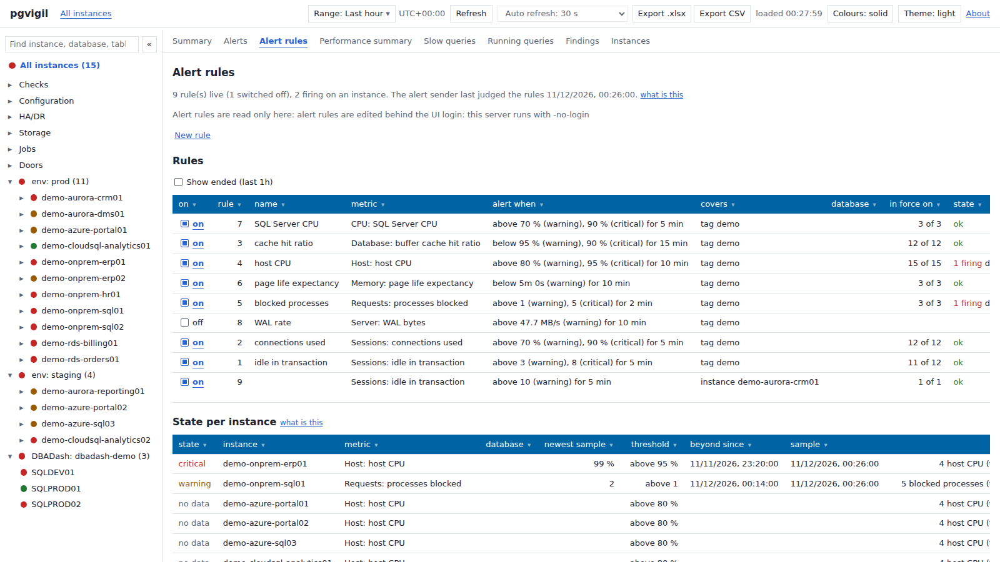

Monitoring for PostgreSQL and SQL Server
Free and open source. pgvigil reads every server on a schedule, keeps the history in a PostgreSQL database, and shows the fleet the way a DBA reads it: what is wrong, what is running, and what changed.

The whole fleet on one page
One row per server with CPU, waits and IO side by side, sortable by any column, coloured only past a threshold. The Summary above counts every check across the fleet; pick a tag or a folder and both narrow to it.


What is running, and who is blocking whom
Every session sampled each minute, the blocking chain walked to its head, and the statement the head ran last. Step back through earlier minutes to see what held the locks an hour ago.

Performance over time
CPU, sessions, waits, transactions and IO on one time axis. Choose any range or a calendar period such as yesterday or the previous week; every chart opens its detail.


Jobs, backups and storage
SQL Server Agent, pg_cron and pgAgent jobs with the failed step's own error message, backups and how old they are, and every volume with its growth and the days until it is full.


Alerts on what matters
A threshold on any metric, for one server, a tag or the whole fleet, sent by email, Teams, Slack or a webhook. Nothing is sent until you set up a channel.


Where it runs
PostgreSQL 13 to 18, tested on your own servers and on Amazon Aurora. Amazon RDS, Azure Database for PostgreSQL, Google Cloud SQL and AlloyDB are recognised and read; not all of them are tested yet.
SQL Server tested on SQL Server 2022 on Linux. Windows hosts, Windows sign-in, earlier versions, Amazon RDS and Azure SQL are not tested yet.
The program is one file for Linux, Windows or macOS. The history lives in a PostgreSQL database you choose.
What it does not do
- Its collector never writes to a server it watches. Ending a session or starting a job is off until you turn it on, through a login kept for that alone, and every use is logged.
- No agent runs on your database servers, and there is no telemetry: it talks to your servers, its own database, the cloud APIs you configure and your alert channels, nothing else.
- It is not a hosted service: you run it, and the data stays in your own database.
- It watches databases, not Kubernetes or your applications.